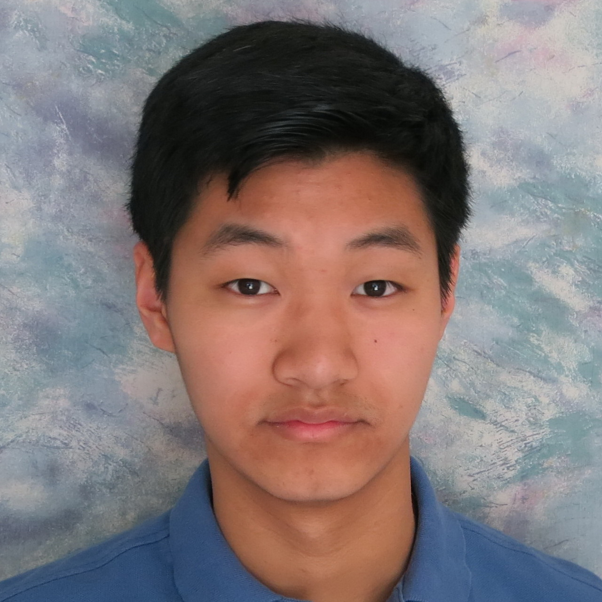
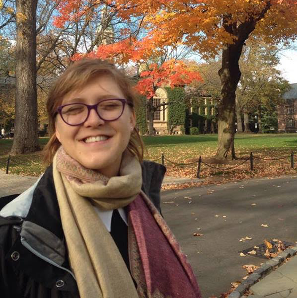
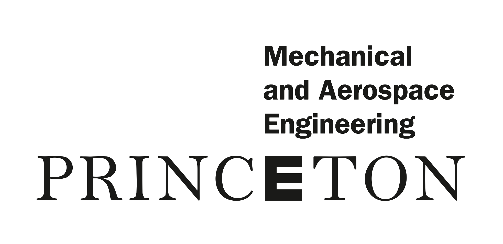
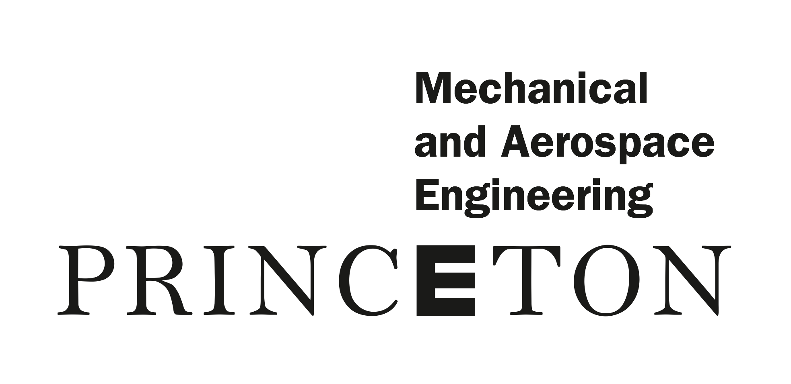

Princeton University Science Olympiad Invitational Tournament

February 4, 2017
Thank you to all for a fantastic tournament! We look forward to next year!
About
Brought to you by
alumni.
Princeton University hosted its first ever Science Olympiad Invitational Tournament on February 4, 2017. Founded by Edison Lee ‘19 and David Fan ‘19, Science Olympiad at Princeton aspires to translate its collective SciOly experience into providing new and veteran teams alike from across the nation with a high-quality invitational experience. Stay tuned for more information on next year’s tournament!
The competition is organized and run entirely by undergraduates at Princeton University, many of whom were national and state medalists in Science Olympiad. Coaches are thus not responsible for running any competition events – we hope that this will give coaches time to prepare as well as time to supervise their teams on competition day. This invitational intends to provide teams with strong preparation for their respective regional and state tournaments, as well as the national tournament.
All 23 Division C events will be run and unless otherwise stated, following the national event rules. All exams will be written by Science Olympiad alumni and the competition schedule closely resembles that of Nationals. In addition to competing in events, students will have the opportunity to learn about Princeton’s STEM offerings, tour campus and more! Results at this invitational will not affect teams’ bids for state and/or national qualification.
Results
An email was sent with a link to the tests and keys as well as a debriefing on the tournament.
Full results can be found at either:
News
6/01/17
- A full link to tests, solutions and scores has been posted following the conclusion of the National Tournament. Information about next year’s tournament will be posted in July. Sign up for updates here.
2/18/17
- A full picture album from the tournament may be found on our Facebook page. Many thanks to the 100+ undergrads who volunteered both on the day and over the course of the year to help make our tournament possible!
2/13/17
- A highlight article was written about our tournament!
2/06/17
- An electronic copy of the tests/keys was sent to coaches along with a feedback form that we would like everyone to fill out. Your feedback is extremely important to us!
2/04/17
- Thanks to all for a fantastic tournament! Final results have been posted on the website and an email will be sent shortly.
1/23/17
- Required forms and day of/parking information was sent to coaches
1/12/17
- Registration is no longer open.
1/06/17:
- Building event self-scheduling will be done through Avogadro. Instructions and the t-shirt preorder form have been sent to coaches.
12/23/16:
- Welcome to JP Stevens High School (Team C-35)!
12/21/16:
- Welcome to Harriton High School (Team C-34)!
12/13/16:
- Competition schedule and team numbers sent via email and can be found here.
12/05/16:
- 34 teams have registered! Confirmation emails were sent and a full event schedule will be posted by the end of the week. Spots remain even though registration officially closed on December 1st - teams are still free to register.
11/01/16:
- Registration is open!
Competition Day
Important Documents:
T-shirts are being sold for $10 each in Frist 206! Please bring exact change. Coach lounge is in Frist 212.
Full Event Schedule and Event Room Locations
Timeslot Results from Build Event Self-Scheduling
Team List with Homeroom Numbers
Campus Map
Parking and Arrival/Departure Instructions
Required Forms:
The following must be brought to team check-in:
- Final Team List: One copy needs to be filled per team; schools sending two teams should thus fill out two copies.
PDF; DOC - Vandalism Policy: One copy per school.
PDF; DOC - Risk and Liability Waiver: Each competitor must sign this.
PDF; DOC
Parking and Arrival/Departure Information
The below information was in the email sent to coaches on January 23rd:
Buses will drop off students in front of 20 Prospect Avenue (Woodrow Wilson School), as described in the parking document. Teams will then walk to McCosh Hall Entryway 3 to check-in. There will be signs in the vicinity to direct students to check-in.
During the day, buses must stay in Lot 21. Students arriving by car may park in either Lot 21, Lot 23 or Lot 10. Teams will be picked up in front of 20 Prospect Avenue after the awards ceremony. Transportation officers in Lot 21 will coordinate the queued release of buses to Prospect Avenue, to avoid congestion. See here for driving directions to campus. For further assistance, kindly contact us by email and we will put you in touch with Public Transportation.
Food
There are many food options available for purchase from restaurants on Nassau Street, and several vendors will be open during the day of the tournament in Frist Campus Center. Student volunteers and event supervisors will have lunch provided free of charge. High school competitors may purchase lunch from the following venues in Frist Campus Center:
- Grill (in the Food Gallery) from 12pm-4pm.
- Witherspoon from 10am-5pm.
- Convenience Store from 10am-10pm.
Emergencies
In the event of a emergency, call Princeton Public Safety at 609-258-3333. They will be able to contact the appropriate medical responders.
In the case of a tournament-related emergency, call tournament co-director Edison Lee at the number in the email sent to coaches.
Other Day of Information
T-shirts will be sold for $10 each (see design).
Please bring exact change for shirts as we are unable to provide change. Also remember to bring goggles/aprons for events that require safety equipment. We will not have extras available. Finally, please remember to respect University property and the students + staff who kindly volunteered their time to make this tournament possible. We look forward to hosting you on Saturday, February 4th!
The Team
 Director: David Fan ‘19
Director: David Fan ‘19
SciOly occupied every waking hour of David’s time from middle school to high school, and he hopes that other people will be able to grow as much from their SciOly experiences as much as he did. In his senior year of high school, David served as tournament director for New Jersey’s first-ever Science Olympiad invitational tournament, held at Montgomery High School. Last year, David and Eddie supervised the “Green Generation” event at MIT’s 2016 Science Olympiad Invitational. David hopes to translate his seven-plus years of experience with Science Olympiad into creating an amazing invitational experience for everyone.
 Director: Edison (Eddie) Lee ‘19
Director: Edison (Eddie) Lee ‘19
Eddie is a sophomore currently majoring in Chemical and Biological Engineering (note: currently). He competed at Nats for two years with Community Middle School, and then with West Windsor-Plainsboro High School North, leading HSN’s team to nationals for the first time in seven years (Woo Nebraska!). While not obsessed with Science Olympiad, Eddie enjoys thinking about Science Olympiad, Science Olympiad, and the meaning of life.
Bill (Yan) Huang ‘19
Bill is a sophomore math major (math is too hard) from West Windsor-Plainsboro High School South. As someone who enjoyed math and science competitions in high school (when math was less hard), he is eager to make SciOly a fun event for everyone. Aside from lots of combinatorics, he likes swimming, playing piano, trolling, playing unhealthy amounts of video games and anime. Especially anime. Need we say more?
Logistics Committee: Shirley Zhang ‘20
Shirley is a freshman who is undecided in everything there is to be undecided about. In high school, Shirley competed with the Fayetteville-Manlius SO team, from which she has fond memories of 1 AM build testing, 10 person human pyramids, and smashing whipped cream in people’s faces. When not organizing SO, you can find Shirley making bubble tea runs and trying to learn to spin a pen backwards.
 Logistics Committee: Sanna Lee ‘20
Logistics Committee: Sanna Lee ‘20
Sanna hailed from Brooklyn, NY before her family recently moved to New York City’s least favorite child– Staten Island. Refrain from asking Sanna about her current freshman year’s schedule, but do ask her about her high school SciOly experience, her cat Moomoo, and her mango allergy.

Logistics Committee: William Jiao ‘20
William is a freshman majoring in mathematics. He competed with the West Windsor-Plainsboro High School South Science Olympiad team for four years. Aside from Science Olympiad, William throws cards, sleeps, and occasionally dabbles in mathematics.
 Director of Communications: Amy Li ‘20
Director of Communications: Amy Li ‘20
Amy is a freshman from Potomac, MD (yes, as in Housewives of Potomac). She started the Science Olympiad team at her high school and is excited to be an organizer instead of a competitor. Her favorite event is forensics because it makes her feel like she’s on an episode of CSI. She loves Mamamoo. <3

Treasurer: Besma (Bess) Arnaout ‘20
Bess is a freshman from Bosnia and Herzegovina. She is excited to contribute her experience with managing finances as well as interest in tech to make SciOly an exhilarating experience for all!
 Designer: Anushka Dasgupta ‘19
Designer: Anushka Dasgupta ‘19
Anushka is a sophomore in the Chemical & Biological Engineering department. She enjoys art, getting up early, and turning the world into her own karaoke bar. She is excited to see you all on campus!
Our Sponsors
This tournament would not be possible without the generous support of the following academic centers and departments on campus, as well as Ultrapress, which made this dream a reality.


 



Contact Us
Have Questions?
Contact us at scioly@princeton.edu.